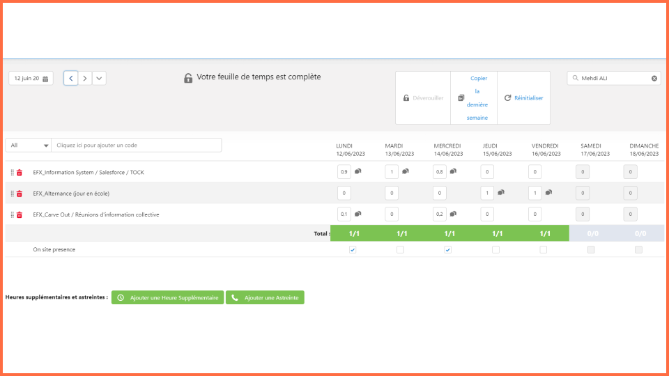
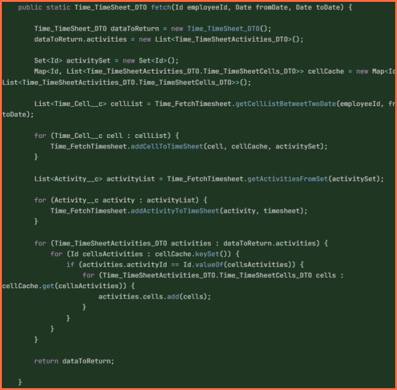
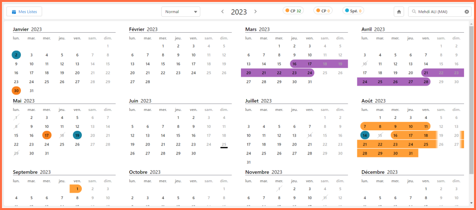

Soutenance D'alternance
Apprenti Ingénieur Informatique


Sommaire
- Présentation de l'entreprise
- Vie en entreprise
- Mes missions
Partie 1
Présentation de l'entreprise
Eviden
Eviden

Clients Historique

Partenaire Concerné
SALESFORCE
Success. Not Software.
Practice Salesforce
Practice Salesforce

Partie 2
Vie en entreprise
Knowledge Sharing
Knowledge Sharing
Les Knowledges sont des sessions bi-hebdomadaires où une équipe présente un sujet, souvent technique, en ligne ou en présentiel. Points clés :
- Présentations par des employés, de divers profils.
- Sujets variés : mises à jour, méthodes...
- Sessions en anglais, enregistrées et accessibles à tous.
- Depuis la fusion avec Eviden, moins de sessions à cause du manque de temps.
Partie 3
Mes missions
Mes missions
-
Assets
- Time
- TRH
Assets
Time
Time
[REFACTOR] Fetch-Timesheet
[REFACTOR] Fetch-Timesheet
[REFACTOR] Fetch-Timesheet
public Time_TimeSheet_DTO fetchTimesheet(Id employeeId, Date fromDate, Date toDate) {
//[...]
List<Time_Cell__c> cellList = Time_FetchTimesheet.getCellListBetweentTwoDate(employeeId, fromDate, toDate);
//[...]
Time_FetchTimesheet.addCellToTimeSheet(cell, cellCache, activitySet);
//[...]
List<Activity__c> activityList = Time_FetchTimesheet.getActivitiesFromSet(activitySet);
//[...]
Time_FetchTimesheet.addActivityToTimeSheet(activity, timesheet);
//[...]
}
[REFACTOR] Fetch-Timesheet
public Time_TimeSheet_DTO fetchTimesheet(Id employeeId, Date fromDate, Date toDate) {
return Time_FetchTimesheet.fetch(employeeId, fromDate, toDate);
}
TRH
TRH
ASR-209
ASR-209
Objectifs de la Refonte du Front-End de l'Application
- Recréer le front-end de l'application en remplaçant AURA par LWC (Lightning Web Components).
- Effectuer une refonte complète de l'interface utilisateur pour une approche moderne et durable.
- Séparer les différentes logiques dans le code pour une structure plus claire et modulable.
- Assurer que l'application soit entièrement responsive pour s'adapter à différents formats d'écrans.
- Gérer de manière autonome le temps de travail pour planifier et exécuter efficacement les étapes du projet.
ASR-209
ASR-209 - Passation
État d'Avancement et Prochaines Étapes du Projet
- Progression continue vers la finalisation de la refonte du projet.
- Préparation d'une documentation technique détaillée pour les autres développeurs.
- Compilation et priorisation des éléments restants à accomplir.
- Identification des tâches complexes pour faciliter la prise en main par l'équipe.
- Assurer une transition fluide pour permettre à l'équipe de reprendre le projet sans encombre.